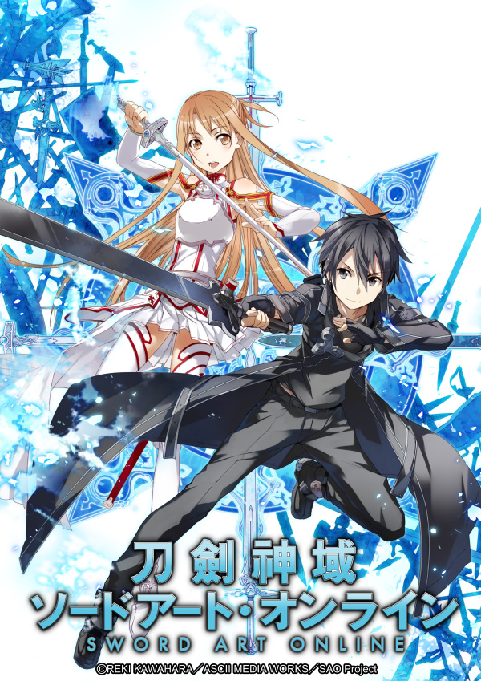

AnimeInterester
刀劍神域

故事簡介
2022 年，重度網路遊戲玩家—桐人，正與其他 9999 名玩家盡情地沉浸在虛擬實境遊戲『Sword Art Online(SAO)』的世界中，沒想到他們竟突然被迫參加遊戲製作者的死亡遊戲—只有將遊戲破關，才能登出這個世界，而若是玩家在遊戲中死亡，現實世界的肉體也會死亡…
製作人員
原作：川原 礫
原作插畫・角色設計原案：abec
導演：伊藤智彦
角色設計：足立慎吾
次要角色設計：川上哲也
總作畫監督：足立慎吾 / 川上哲也
動作作畫監督：柳隆太 / 鹿間貴裕
主要動畫師：斎藤敦史
怪物設計：柳隆太
道具設計：土屋祐太 / 鹿間貴裕 / 千葉茂
色彩設計：中島和子
美術監督：竹田悠介（Bamboo）/ 長島孝幸（Bamboo）
美術設定：谷内優穂（KUSANAGI）
概念藝術：堀壮太郎
攝影監督：廣岡岳 / 臼田睦
CG監督：雲藤隆太
剪輯：西山茂
音響監督：岩浪美和
效果：今野康之
音響制作：ダックスプロダクション
音樂：梶浦由記
音樂制作：アニプレックス
プロジェクト統括：GENCO
製作：SAO Project
聲優名單
桐人/桐谷和人:松岡禎丞
亞斯娜/結城明日奈:戸松遥
莉法/桐谷直葉:竹達彩奈
結衣:伊藤かな恵
西莉卡／綾野珪子:日高里菜
莉茲貝特／篠崎里香:高垣彩陽
克萊因／壺井遼太郎:平田広明
艾基爾／安德魯·基爾博德·密魯茲:安元洋貴
幸:早見沙織
須郷伸之:子安武人
茅場晶彦:山寺宏一
各集標題
| 話數 | 標題 | 話數 | 標題 |
|---|---|---|---|
| 1 | 劍的世界 | 13 | 地獄深淵 |
| 2 | 封弊者 | 14 | 世界的終焉 |
| 3 | 紅鼻子馴鹿 | 15 | 歸還 |
| 4 | 黑色騎士 | 16 | 妖精的國度 |
| 5 | 圈內事件 | 17 | 被囚禁的女王 |
| 6 | 幻影復仇者 | 18 | 前往世界樹 |
| 7 | 心的溫度 | 19 | 魯古魯迴廊 |
| 8 | 黑與白的劍舞 | 20 | 猛炎之將 |
| 9 | 青眼惡魔 | 21 | ALO的真相 |
| 10 | 紅色殺意 | 22 | 主線任務 |
| 11 | 朝露之少女 | 23 | 羈絆 |
| 12 | 結衣的心 | 24 | 鍍金的勇者 |
| 25 | 世界的種子 |